- Power up the Artemis and sensors with a battery
- Add ToF distance sensors to the robot
Objectives
Lab 3 Tasks
- Battery Power
- Connection of ToF
- I2C Channel
- Pros/Cons of ToF modes
- 2 ToF Simultaneous Functionality
- Parallel Clock Print and Data Acquisition
- Timestamped ToF and IMU data
- Infrared transmission (5000-level)
Prelab
The following is a sketch of all of the connections that are going to be made:
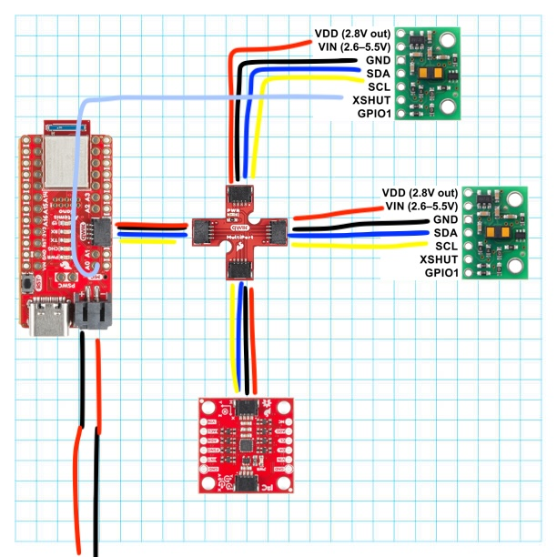
Figure 1: Diagram of Wires
I decided that I will place one ToF at the front of the car, in the middle, and one on the right side, between the two wheels. That way.
, I will have information from both X and Y axes. One scenario where the robot might miss obstacles
is when it is moving in a straight line and there is a landmark on the left of its body. Having the ToF sensors placed in that manner would not allow for detection
of this obstacle. The frontal sensor will give the car the ability to detect obstacles in its way sot hat it avoids them, and the one on the side will help it remain a set distance from a wall.
If either one sensor was missing, the robot would have many different issues with its sensing.
Battery Power
In order to power the Artemis up with our 650mAh battery, I needed to solder the battery to the JST connector. I connected the black wire of the JST connector to the positive end (red wire) of the battery -and vice versa- because, as shown in the image below, that's where the + terminal of the Artemis is:
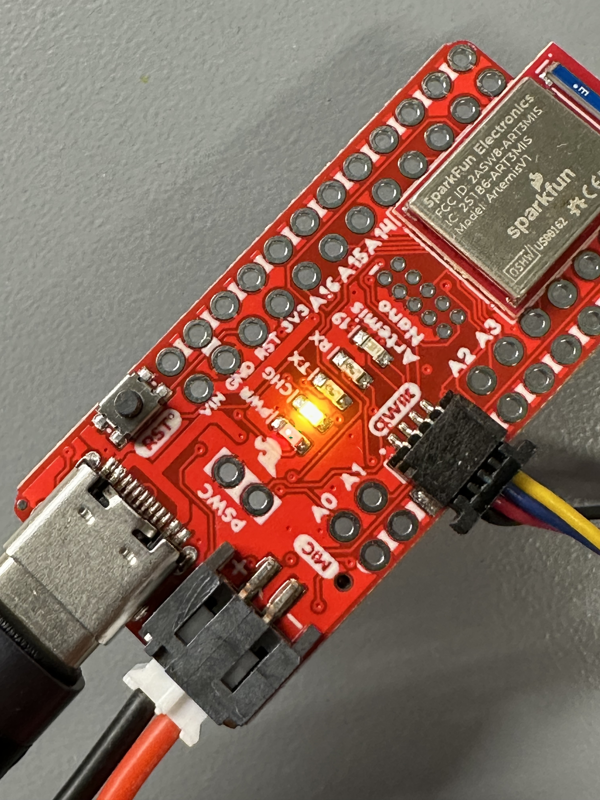
Image 1: Artemis + and - terminals
I also used heat-shrink tubing to ensure the connections were secure and short-proof. The result is the following:
(Note the orange light which indicates that the battery is being charged by the Artemis)
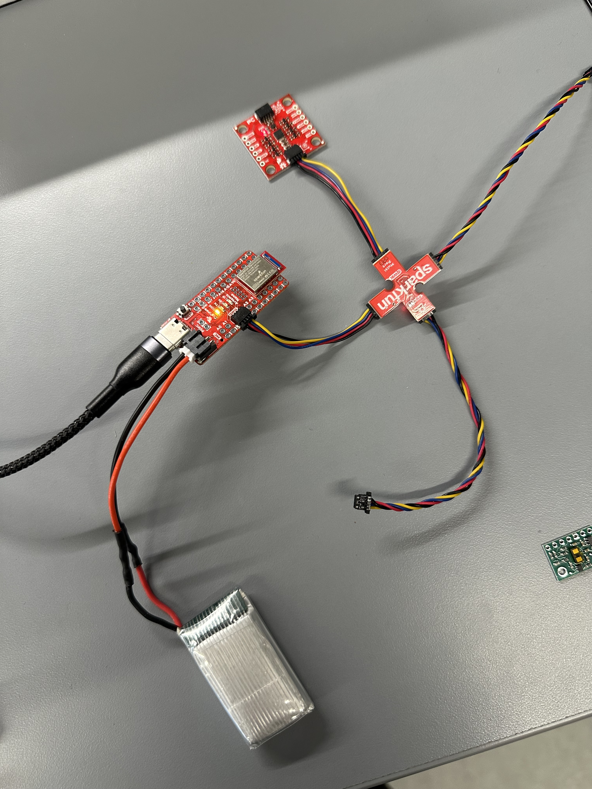
Image 3: Artemis powered by battery
Connection of ToF
After installing the SparkFun VL53L1X 4m laser distance library, I took one of the two longer QWIIC cables and cut it in order to connect the ToF to the Artemis. I chose to cut these wires as that would allow for more flexibility in placing the ToF sensors. The wires were passed through the back in order to be soldered in place, so that the sensor could easily have the sensing element looking "ahead". The following image shows the soldering that took place to form the secure connection:
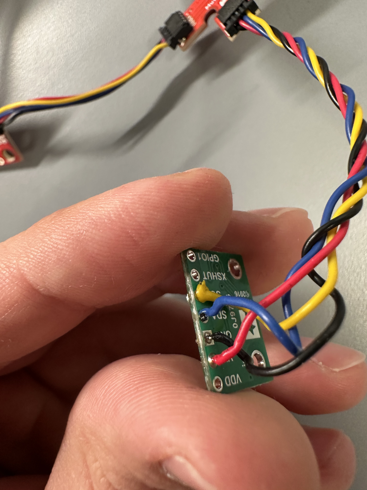
Image 4: ToF with soldered wires
I2C Channel
To test that the connections were made properly, I ran the Example05_wire_I2C example from the Apollo3 library and the address that was detected was 0x29:
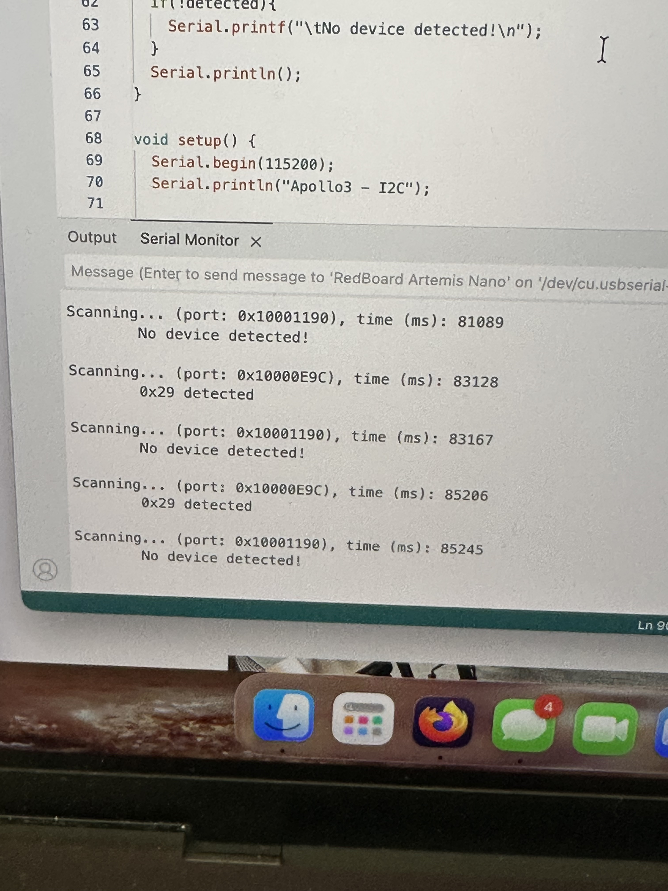
Image 5: ToF I2C address
This might seem weird, as the ToF's datasheet read that the address would be 0x52. However, in binary, 0x29 is 00101001.
On the other hand, 0x52, is 01010010. As indicated by the sheet for the ToFs, the least significant bit is for setting read/write.
This explains the address that was displayed, as it's the one we expected with an additional 1 at the end.
Pros/Cons of ToF modes
In order to test the sensor's range, accuracy, repeatability and ranging time, I made a case for Long, Long no ranging and the equivalent for short mode. These cases included the following code which samples 100 measurements:
case GET_HUNDRED_TOF_DATA_LONG:
distanceSensor.setDistanceModeLong();
float timeMeasurementSTART2;
float timeMeasurementSTOP2;
float distanceMeasurement2;
if (!success) {return;}
// Collection of 100 data points
for (int i = 0; i < 100; i++) {
timeMeasurementSTART2=millis();
distanceSensor.startRanging();
while (!distanceSensor.checkForDataReady())
{
delay(1);
}
distanceMeasurement2 = distanceSensor.getDistance();
distanceSensor.clearInterrupt();
distanceSensor.stopRanging();
timeMeasurementSTOP2=millis();
ToFs[i]=distanceMeasurement2;
timestamps[i]=(timeMeasurementSTOP2-timeMeasurementSTART2);
} ....
case GET_HUNDRED_TOF_DATA_LONG_no_ranging:
distanceSensor.setDistanceModeLong();
distanceSensor.setTimingBudgetInMs(20);
distanceSensor.setIntermeasurementPeriod(20);
float timeMeasurementSTART3;
float timeMeasurementSTOP3;
float distanceMeasurement3;
if (!success) {return;}
// Collection of 100 data points
distanceSensor.startRanging();
for (int i = 0; i < 100; i++) {
timeMeasurementSTART3=millis();
while (!distanceSensor.checkForDataReady())
{
delay(1);
}
distanceMeasurement3 = distanceSensor.getDistance();
distanceSensor.clearInterrupt();
//distanceSensor.stopRanging();
timeMeasurementSTOP3=millis();
ToFs[i]=distanceMeasurement3;
timestamps[i]=(timeMeasurementSTOP3-timeMeasurementSTART3);
} ....
To compare the two modes I had the following setup:
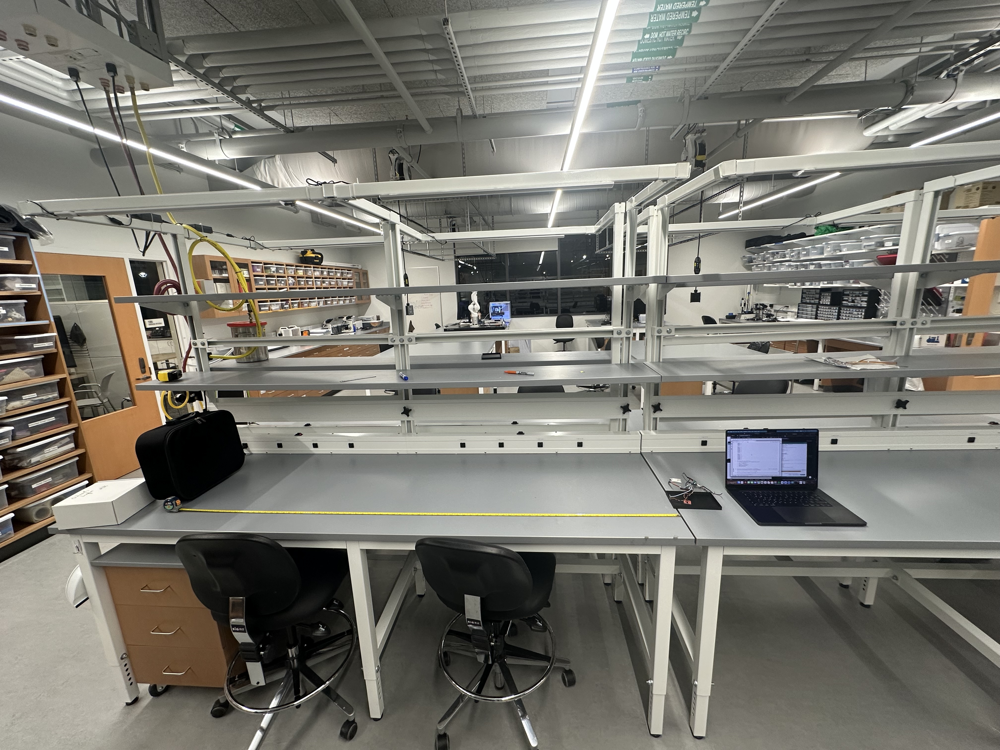
Image 6: ToF sensor mode comparison setup
By using distanceSensor.setDistanceModeLong(); or distanceSensor.setDistanceModeShort();, I can set the different mode of the sensor, and by
changing distanceSensor.setTimingBudgetInMs(20); and distanceSensor.setIntermeasurementPeriod(20); I could allow for the measurement of different ranging times by also changing the code as is shown above. The medium mode required the use of the Polulu VL53L1X Library.
Based on the infromation available in the data sheet, the short mode is less sensitive to light but effective in... shorter distances up to 1.3 meters. On the other hand the long mode is effective for up to 4 meters.
The range of the Long mode was enough for me to get some 6 meter measurements. The short mode however, didn't manage to get measurements above 2m. These two modes were tested in 4 different distances. 500, 1000, 1500 and 2000 mm. The results are displayed in the figure below
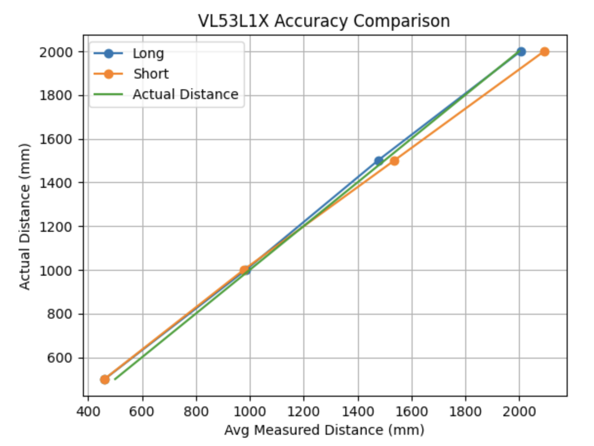
Figure 2: ToF sensor mode comparison results
These results reflect what was said above as the long mode was more accurate in the longer distances.
As far as ranging time is concerned, the mean time interval when we have stopRanging() inside the measurement loop was 49.9ms.
On the other hand, when stopRanging() was outside the loop, the mean time interval was 19.98ms
Finally, for repeatability, both modes were relatively good, with an average standard deviation in measurements of ~1.45 mm
I will be working with the short mode as our robots will not have to take measurements that are further than 1.3 meters and it's more robust as a mode.
2 ToF Simultaneous Functionality
To add the second ToF sensor, I also soldered the XSHUT pin of the sensor to the A0 pin of the Artemis, which is an analog pin, used primarily for analogRead(). For both sensors to be able to run at the same time the XSHUT pin needs to be help low when starting up so that it's disabled in the beginning. Then, the first sensor's address can be changed (0x39 was selected), allowing the second sensor to initialized by pulling the XSHUT pin high.
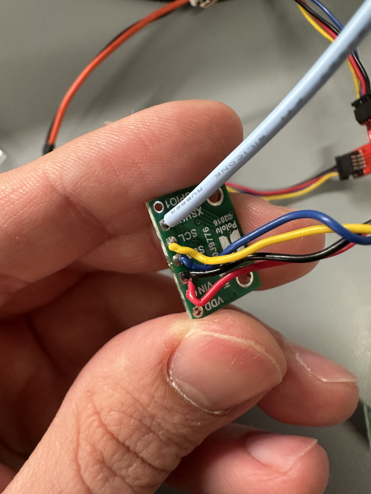
Image 7: Second ToF soldered
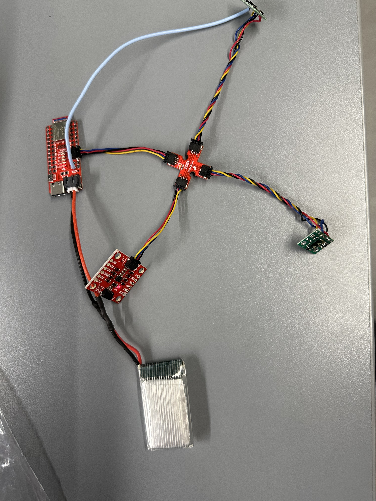
Image 8: Artemis with two ToF sensors
The code used for that was:
...
pinMode(SHUTDOWN_PIN, OUTPUT);
digitalWrite(SHUTDOWN_PIN, LOW);
distanceSensor.begin();
distanceSensor.setI2CAddress(0x39);
if (distanceSensor.begin() != 0)
{
Serial.println("Sensor failed to begin.");
while (1)
;
}
digitalWrite(SHUTDOWN_PIN, HIGH);
distanceSensor0.begin();
if (distanceSensor0.begin() != 0)
{
Serial.println("Sensor failed to begin.");
while (1)
;
}
....
After adding the relevant code for distanceSensor0, I ran the code and the following image shows that the two sensors actually capture different distances simultaneously:
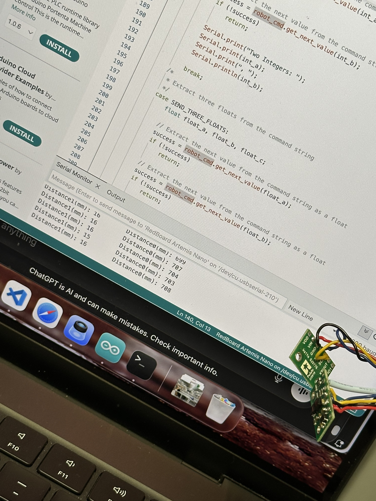
Image 9: Two ToF simultaneous functionality
Parallel Clock Print and Data Acquisition
Until the ToF had new data ready, the code was "frozen". This delays the code by the amount stated above depending on the configuration.
To work around this, we can simply change the loop so that it checks if data is ready with .checkForDataReady() and, if data is not ready, the code is not "frozen" but cotninues running normally.
To see how fast our loop executes we can include print statements:
void loop(void)
{
distanceSensor.startRanging();
distanceSensor0.startRanging();
if (distanceSensor.checkForDataReady())
{
int distance1 = distanceSensor.getDistance();
distanceSensor.clearInterrupt();
distanceSensor.stopRanging();
Serial.print("Distance1(mm): ");
Serial.println(distance1);
}
if (distanceSensor0.checkForDataReady())
{
int distance1 = distanceSensor0.getDistance();
distanceSensor0.clearInterrupt();
distanceSensor0.stopRanging();
Serial.print("Distance0(mm): ");
Serial.println(distance1);
}
Serial.print("Current clock time in ms: ");
Serial.println(millis());
}
Looking at the serial monitor we can see:
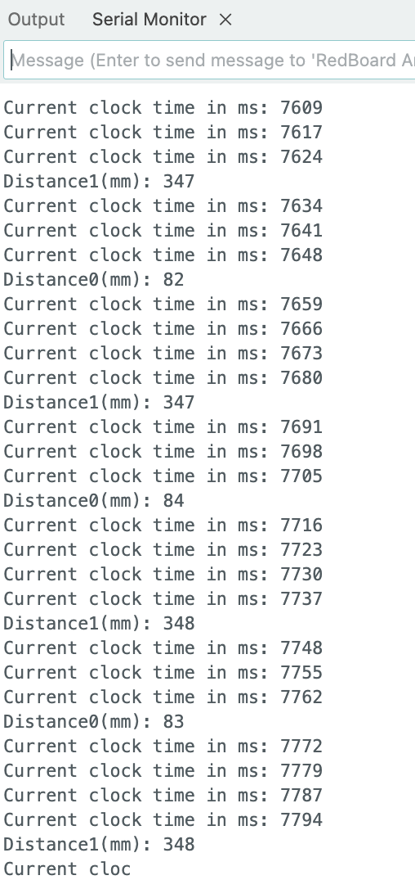
Image 10: Loop Execution Speed
This means that the average execution time of the loop was 7 milliseconds independently of whether data was read or not. This is considerably faster than the previous method. As our Professor has stretched, the serial prints take some time to run, meaning that, if we removed them as well, the loop could be even faster. The limiting factor is the speed of the Artemis itself and in the future it will be the fact that we'll need to send the data through bluetooth.
Timestamped ToF and IMU data
From Image 8, we saw the IMU and the two ToFs connected. I edited the code from previous labs and added measurement of the ToF sensors. I made a new case CMD for the Artemis and the following notification handler:
def IMU_and_ToF_handler(uuid, byteArray):
string = ble.bytearray_to_string(byteArray).strip()
T,P,R,D,A = string.split(",")
time = float(T[2:])
pitch = float(P[2:])
roll = float(R[2:])
distance = float(D[2:])
distance0= float(A[2:])
Timestamps.append(time)
Pitchs.append(pitch)
Rolls.append(roll)
ToFs.append(distance)
ToFs0.append(distance0)
Then I plotted the data:
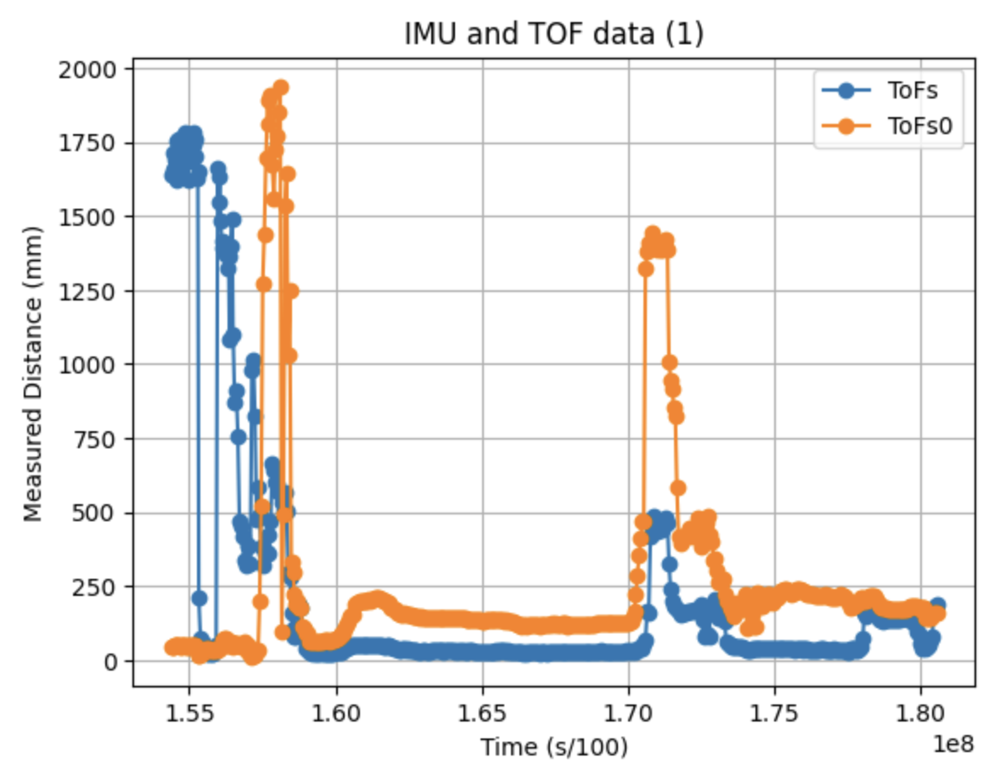
Figure 3: ToF part over time
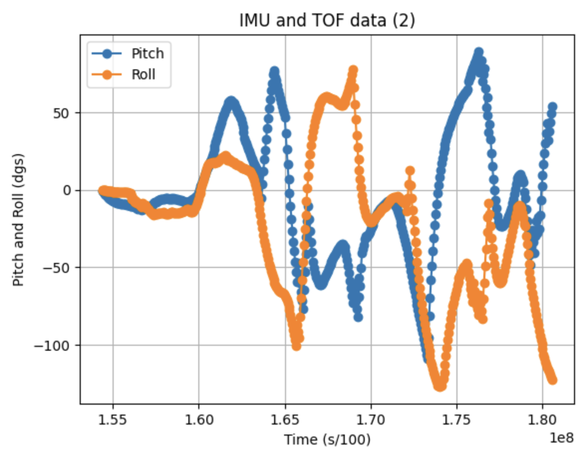
Figure 4: IMU part over time
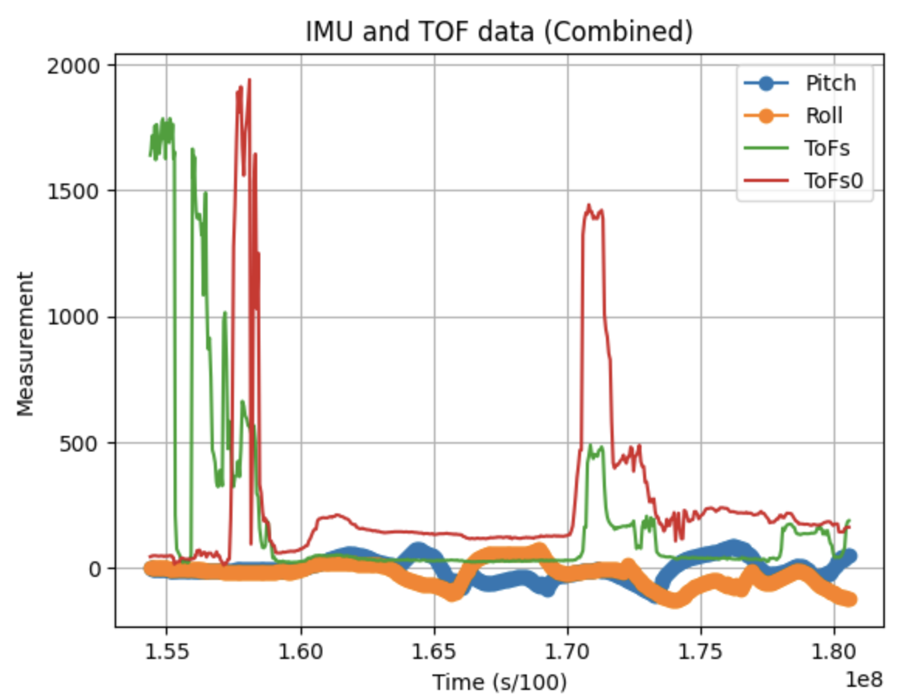
Figure 5: Combined data over time
Infrared transmission (5000-level)
Most ToF sensors are Infrared. The one we use is no exception. There are two main categories of IR distance sensors: Active and Passive. Active sensors emit IR light and then sense the same beam after it is reflected back at them. Passive sensors detect IR radiation that is already present in the environment, such as heat emitted by living beings. They don't send out a signal of their own. This makes them very energy efficient. However, the can not measure exact distances. The ToF sensors we use sends out a short pulse of IR light and measures the time it takes for the light beam to "fly" to the target and bounce back. Since the speed of light know, the distance can be calculated very accurately based on that time.
Because a TOF sensor works by sending and receiving infrared light, its performance depends heavily on the surface it is measuring. Different colors and materials reflect infrared light in different ways. For example, lighter or shinier surfaces often reflect more IR light, while darker or matte surfaces may absorb more of it. This can affect the accuracy and consistency of the distance reading.
For this reason I tested the sensors by sensing different materials and colors at a fixed distance of 500mm. However, it needs to be said that how perfectly I set it up could be debated. When the sensors are permanently fixed on the car, I want to re-test the sensors and perhaps calibrate them.The results are the following:
White cardboard: 501 ||| Navy Blue cloth: 506 ||| Black cloth suitcase 511 |||
semi-translucent plastic box 488 ||| White plastic cap 501 ||| Blue rough plastic 508
The Following pictures are 3 examples of the tests:
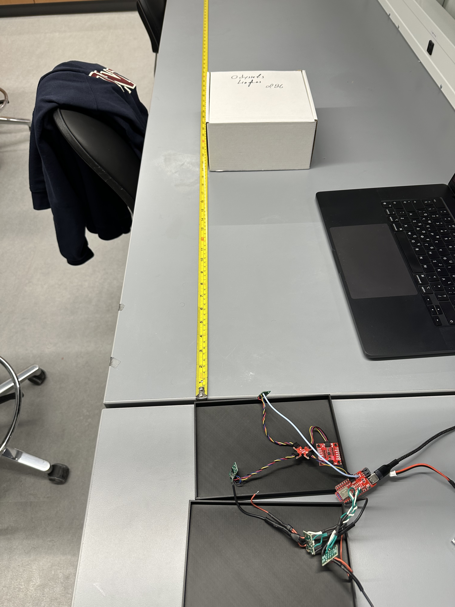
Image 11: White Cardboard Measurement
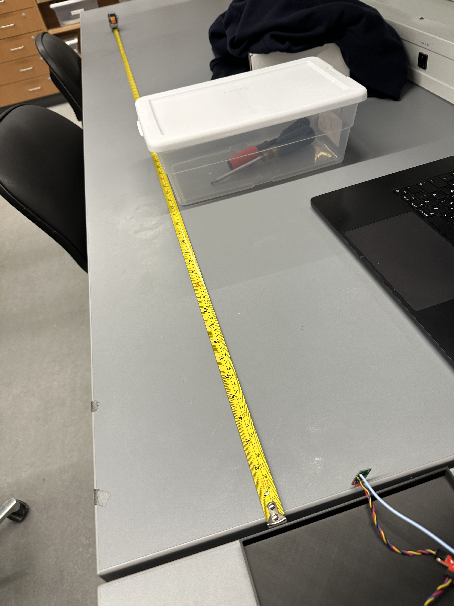
Image 12: Translucent Plastic Measurement
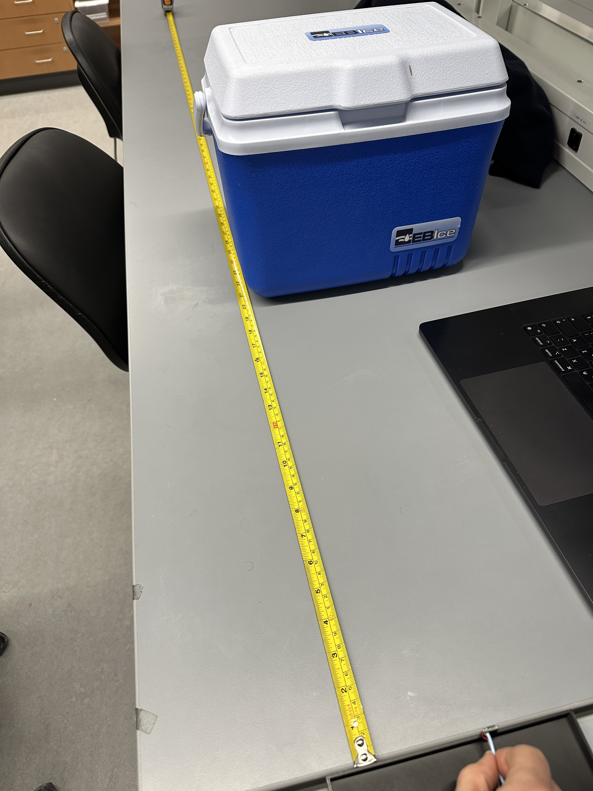
Image 13: Rough Blue Plastic Measurement
The differences weren't too noticable. The lighter the color the less the measured distance while the darker the bigger. The translucent box had the least measured distance while the black suitcase had the biggest one. However, again, due to the way I tested, I can not be that sure of the results. I want to permanently fix the sensors on the robot and then re-do these based on the materials that are going to be on the "arena" our cars will be in, as the materials do play a role that can end up being relatively significant.
Discussion
Lab 3 successfully integrated the ToF to the Artemis and established simultaneous IMU and ToF data transmission via bluetooth. Additionally, now the Artemis can run from the Battery.
Collaboration
I used chatGPT for the plots, and I referred to Aidan McNay's and Lucca Correia's Websites for structuring this lab report.